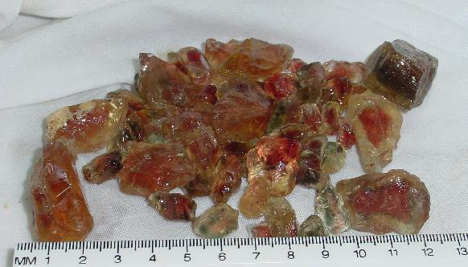
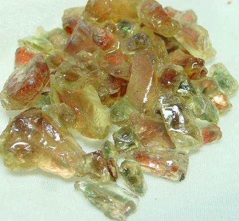
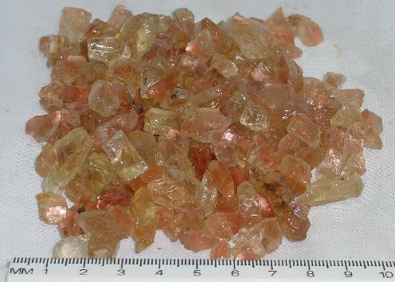

Sunstone
Rough
Sunstone
is an ancient gem, in fact sunstones have
been discovered in Viking burial mounds. It was thought that the
sunstone aided in navigation.
Formed and crystalized in a lava flow, Sunstone is a member of
the feldspar group
of minerals and is closely related to Moonstone. These produce
two types of material, one
that is cut en-cabochon or made into beads like opal or jade and
the other is faceted like
a diamond or saphire.
The cabochon and bead material exhibits a unique visual phenomenon
known as "schiller"
which is caused by millions of microscopic copper platelets. These
copper platelets reflect
light with varying intensities depending on their concentrations.
The "schiller" phenomenon
makes the stone appear to glow even when viewed from a distance.
It has been suggested that Sunstone would be an excellent alternative
to Peridot as
the August birthstone. When set alone or in combination with other
gems, Sunstones make a
fabulous addition to any collection.
Until recently Sunstone was available only in limited quantities
and poor grade.In the early 1990's location of three different
deposits in Oregon have made it
possible for top-grade rough and cut stones to be readily available
at competitive prices.
The faceting material comes in a wide range of colors and properties,
some of them being
unique to Sunstone.The Rabbit Hills material (offered here) is
mainly facet-grade.

This being
our premium Reds and Greens. Instead of being $65/ct for this
quality of rough ours is $25 per gram!

This being
our medium Reds and Greens. Instead of being $50/ct for this quality
of rough ours is $15 per gram!

All our
Pinks are hand selected after they have been washed and cleaned,
they are light, medium, and intense Pink schillered that become
what we call Mine Run Grade.
MRG Pink
Sunstone rough is $3.00 per gram.
MRG Pink
Sunstone rough sampler of 25 gms is $25
MRG Pink
Sunstone rough 100 gm lots are $200
MRG Pink
Sunstone rough 500 gm lots are $750
MRG Pink
Sunstone rough 1 Kilo lots are $900
Larger
quantities enquire.
Home|
Jasper | Agates
|Opal | Facet Materials |
Finished Gems | Finished Jewelry
Collectables & Collections
| Specials | Equipment
| People Stories
Ordering Info | E-mail
Us